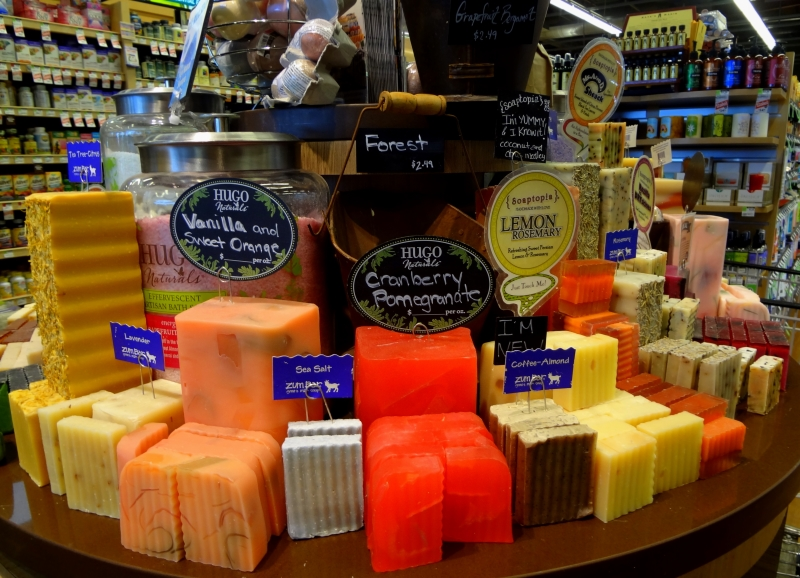
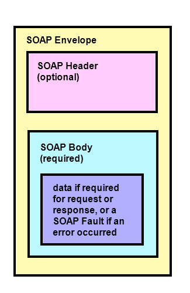

Web Services, WSDL, SOAP envelope with JavaScript
The main concept of Web Services is to exchange data between two devices using standardized protocols and messages.
Table of Contents
- What is Web Service and WSDL?
- SOAP protocol
- Example of SOAP envelope
- Create/receive SOAP request/response. Helpers
- $.soap
The W3C defines a Web services: a software system designed to support machine-to-machine interaction over network. Other systems interact with the Web service in a manner prescribed by its description using SOAP messages, REST, or using HTTP with an XML serialization with other Web-related standards
And for be little clear about WSDL (Web Services Description Language) - describes services as collection of network endpoints or ports in XML format.
Exchange messages usually accomplished by protocol HTTP. However, it should be noted that it is still used, but very rarely, protocol - SMTP (Simple Mail Transfer Protocol).
Protocol SOAP transfers messages or small amount of information. SOAP messages formatted in XML and are typically send using HTTP. Some time ago SOAP was spelled as Simply Object Access Protocol. But time passed and everybody saws that protocol isn’t simple and nothingness in common with access to objects.

The SOAP message has 3 parts: envelope, head, body. Body contains all response/request data. Also can say that head isn’t required and in modern apps doesn’t used.

Example of SOAP XML:
What here have happened? In the beginning I created SOAP envelope, which call service with URN (Uniform Resource Name). Then calling method getProductByHash.
SOAP response of web-service have next view, only body tag:
To create soap envelope I use my soap helper module:
Example creating SOAP request from soap helper as JS object:
Loggin result in chrome log:
Once I’ve obtained object with properties which I need to use to create XML SOAP Request. It’s time to use xml helper module with whole bunch of useful methods:
- Next creating XHR object, 2 callbacks and send request via POST method
- Parse XML into JSON object
- Fetch response value
This script uses $.ajax to send a SOAP envelope. It can take XML DOM, XML string or JSON as input and the response can be returned as either XML DOM, XML string or JSON too.
Example:
Full $.soap documentation.

{kind=link}